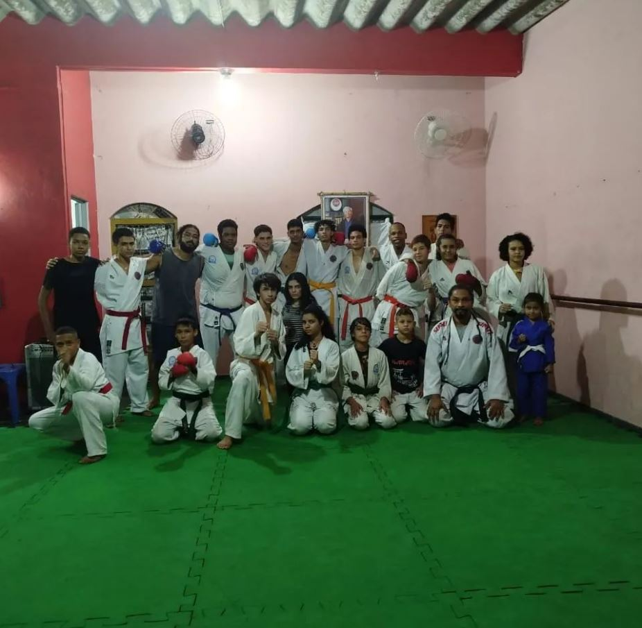
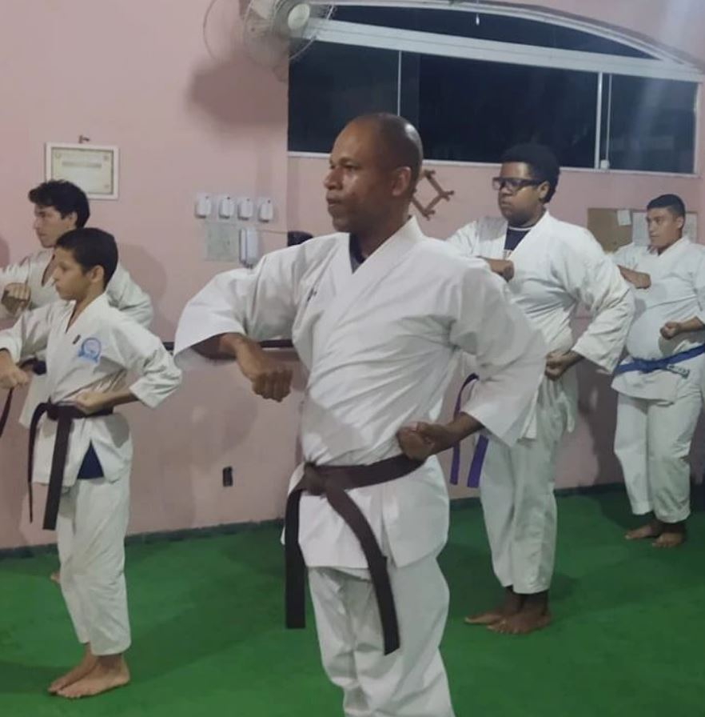
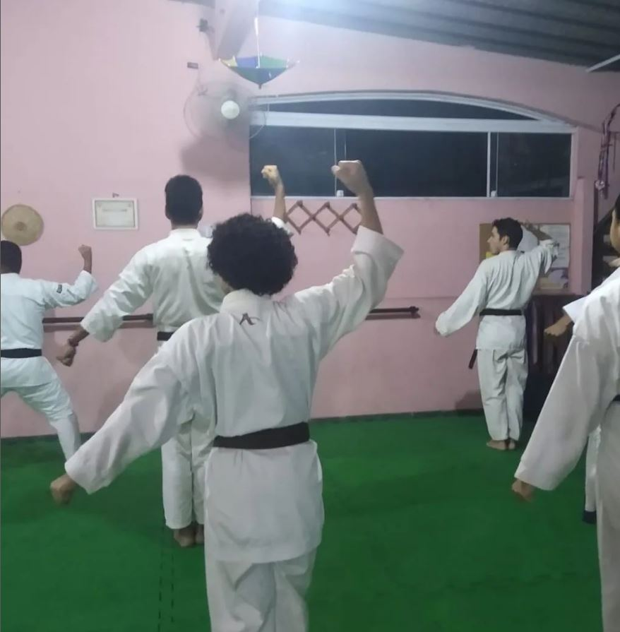
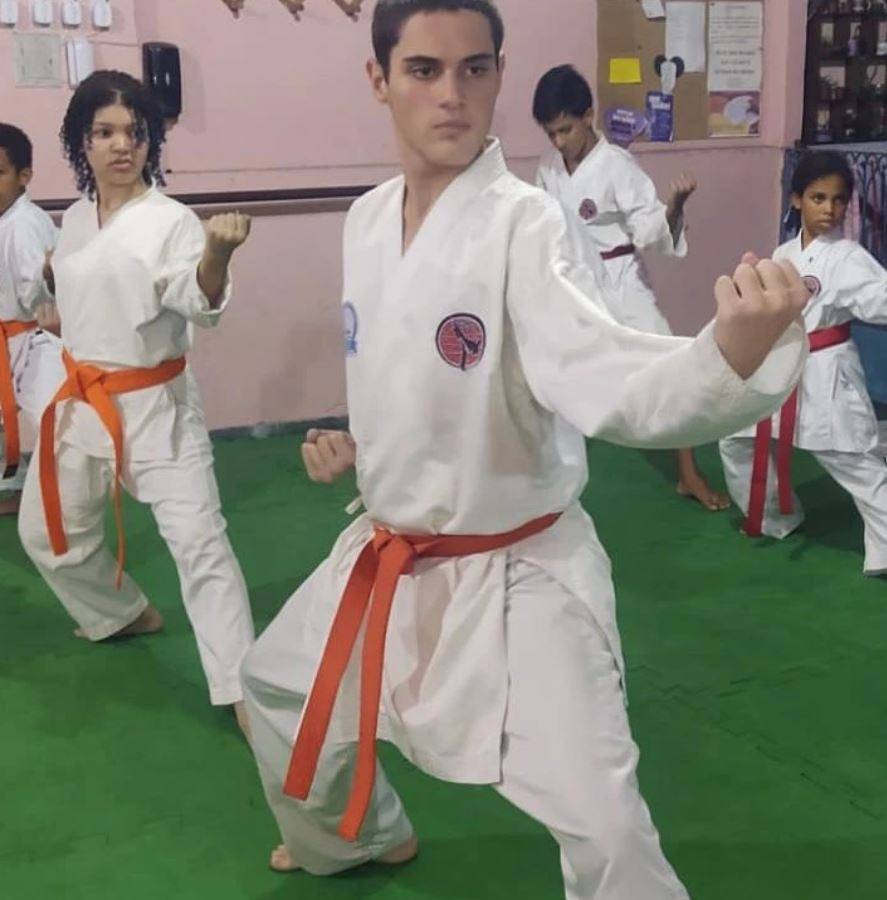

Acompanhe Nossas Aulas





Esta página foi desenvolvida para facilitar o processo de inscrição nas aulas de Karatê oferecidas pelo projeto social Terraço das Artes. Ao preencher o formulário, você estará se candidatando a participar de uma comunidade dedicada ao desenvolvimento físico e mental através das artes marciais.
Valorizamos a sua privacidade e segurança. Todas as informações pessoais fornecidas neste formulário são protegidas e utilizadas exclusivamente para fins de cadastro e comunicação referentes ao projeto. Nenhum dado será compartilhado com terceiros sem o seu consentimento.
O Karatê não é apenas uma arte marcial, mas também uma filosofia de vida que oferece inúmeros benefícios. A prática regular desta arte proporciona um desenvolvimento físico e mental equilibrado, fortalecendo tanto o corpo quanto a mente. Além disso, o Karatê melhora a coordenação motora, aumenta a flexibilidade, e promove a disciplina e o autocontrole.
Para muitos, o Karatê é uma forma de melhorar a autoestima e a autoconfiança, ao mesmo tempo em que proporciona uma excelente forma de autodefesa. Em um ambiente controlado e respeitoso, você aprenderá técnicas eficazes que podem ser aplicadas em situações reais, enquanto desenvolve uma mentalidade de respeito e responsabilidade.

Daniel Cunha: “As aulas de Karatê no Terraço das Artes mudaram minha vida. Não apenas melhorei minha forma física, mas também ganhei disciplina e autoconfiança que aplico em todas as áreas da minha vida.”

Adriana Alves: “Comecei o Karatê por curiosidade e agora é uma paixão. As aulas me ensinaram a importância da perseverança e me ajudaram a superar desafios que eu nunca imaginei que poderia enfrentar.”

Gerson Moraes (Sensei): “É gratificante ver o progresso dos meus alunos. O Karatê não é apenas sobre combate, mas sim sobre construir caráter. Cada aula é uma oportunidade de desenvolver habilidades que vão além do dojo.”